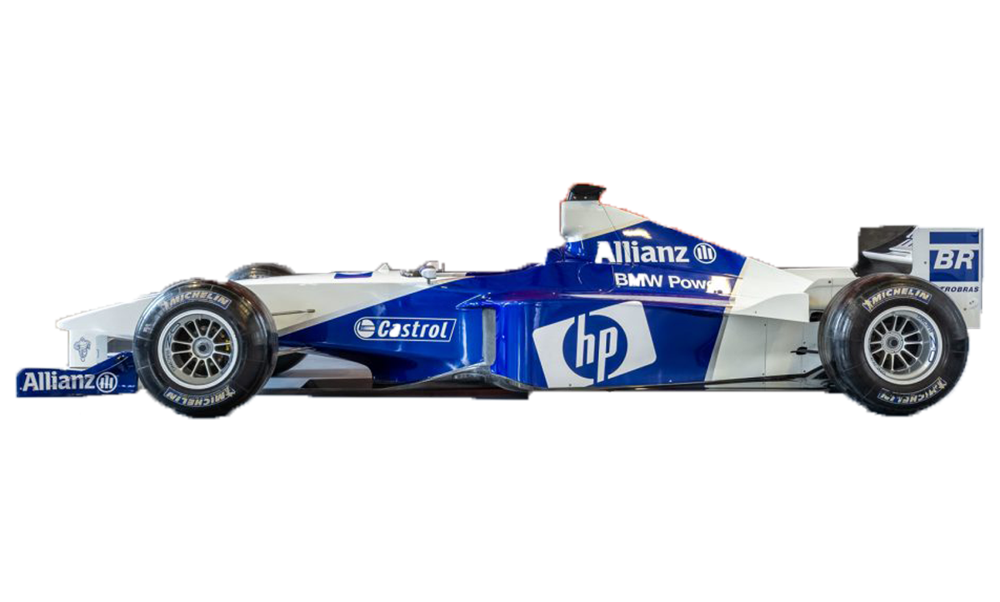

The development of the BMW M5 E60 with its S85 engine began in the early 2000s. Back then, the gold standard in motor racing was 333 cc per cylinder, in series engines 500. If we take 100 hp per litre cubic capacity as the ideal in naturally aspirated engines and a goal of 500 hp, we need five litres of capacity distributed across ten cylinders. At the time, V10 engines were seen as unusual for series vehicles, even for BMW M. This motor concept was used more in Formula 1, also by BMW Motorsport. The connection was obvious: the motor blocks for the Formula 1 engines and those of the BMW M5 E60 come from the same Bavarian foundry in Landshut. This was the only connection to the Formula 1 engine.
